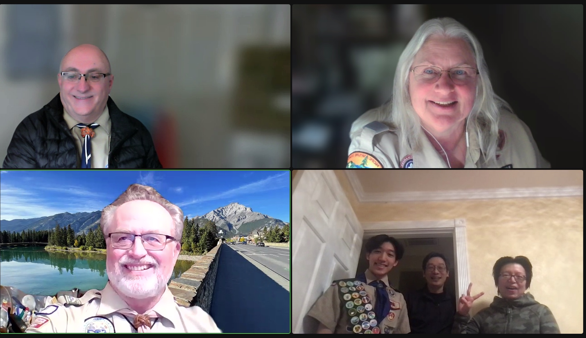

February 19, 2023
Eagle Scout Project
Picture of Eagle Project with wood mulch covering everything (the plants haven't fully grown yet.)
An Eagle Project is required for everyone but I wanted to accomplish something meaningful to my community. So, I chose a renovation and rehabilitation project for a popular local park, Coyote Point. After spending two or three months in the planning phase, I got the project approved and started work on it on February 19, 2023. The project had multiple steps: dig a trench for the irrigation hose, dig holes for the plants, lay down the irrigation hose, punch holes and insert drippers into the hose, stake down the hose, plant the plants and cover the irrigation hose, and lay woodchip mulch over the entire area. Using proper leadership and delegation of tasks, I was able to finish the originally planned to be a two-day project in one day. Through this experience, I was able to learn about leadership and how to effectively deal with unforseen problems.
October 31, 2023
Eagle Board of Review

Picture of Eagle of Eagle Board of Review
An Eagle Board of Review is one of the major requirements of becoming an Eagle Scout. This Board of Review is similar to an interview and is used as a way to check that the Eagle Candidate really was able to develop leadership skills and participate in the troop instead of someone else just signing off on the requirements without completing them. In this interview, the interviewers ask challenging questions regarding leadership, the scout's experience in scouting, and what it means to be a scout. During this meeting, I was able to hone key skills that I would need later on.
What does being an Eagle Scout mean to me
At first, being a scout meant going on fun camping trips and going to the outdoors while building fires. However, as I progressed in the program–eventually becoming a First Class Scout–I started to realize that leadership was a more important of scouting. This becomes clearer as scouts progress because after First Class, the requirements to rank up become more focused on leadership than scout skills. To me, someone who is an Eagle Scout is someone who has learned leadership through hands-on experiences. To me, an Eagle Scout is someone who has made mistakes in leadership but takes it in stride and applies it in stride to other parts of their life.
Another way to say this is using the Boy Scout Motto "Be Prepared". As a beginner scout, you memorize this motto and learn about how it means to be prepared for anything that might happen in camping and the outdoors. However, to me, after reflecting on my whole experience in scouting, the Scout Motto "Be Prepared" means that scouts are prepared to lead, to lead others in camping and other situations. It also means to be prepared in daily life not just scouting, it means to be prepared to apply the skills I have learned in scouting to the other parts of my life.